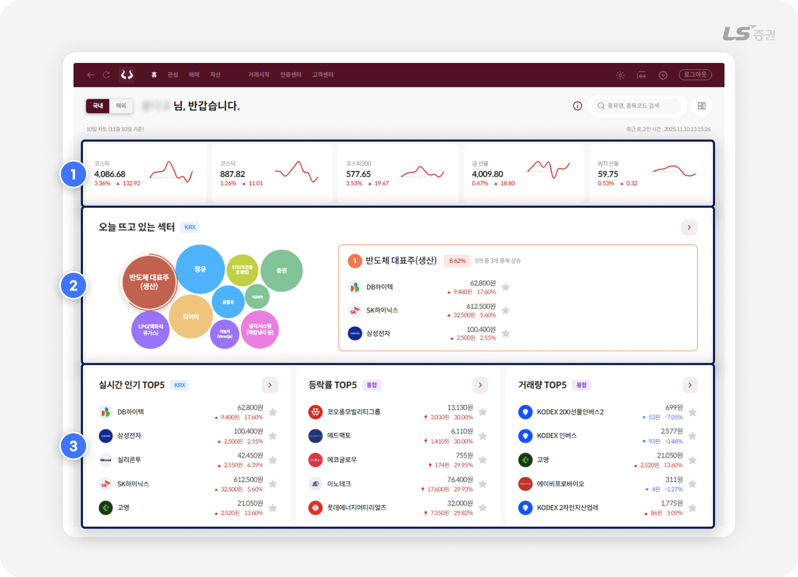
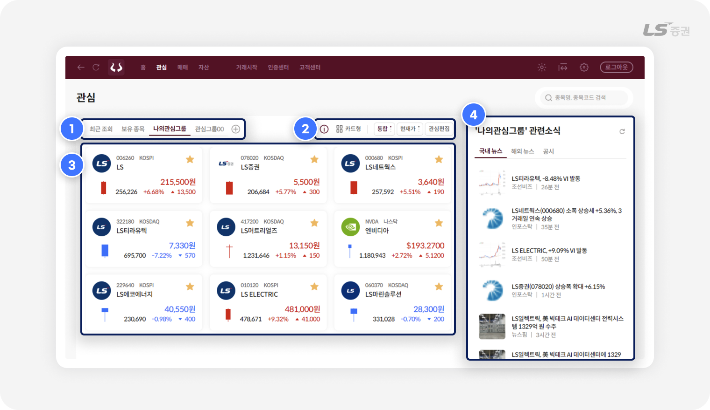
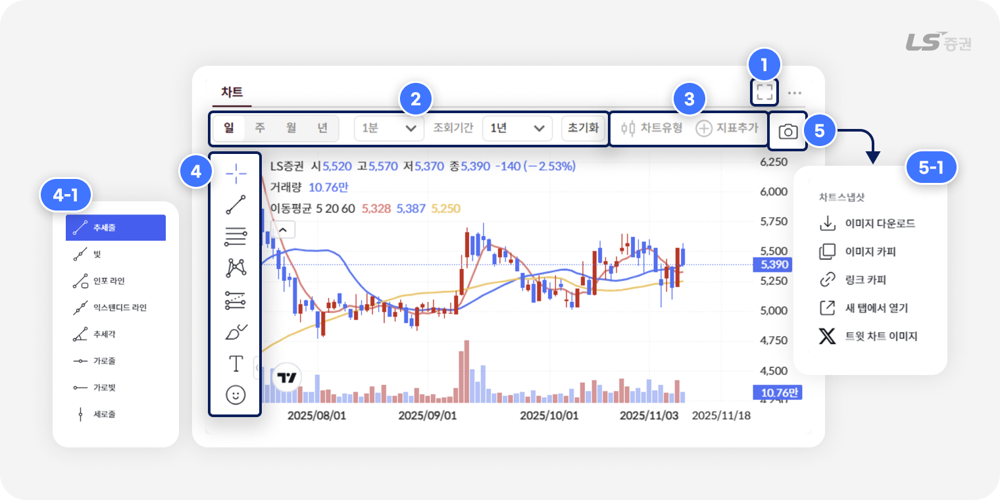
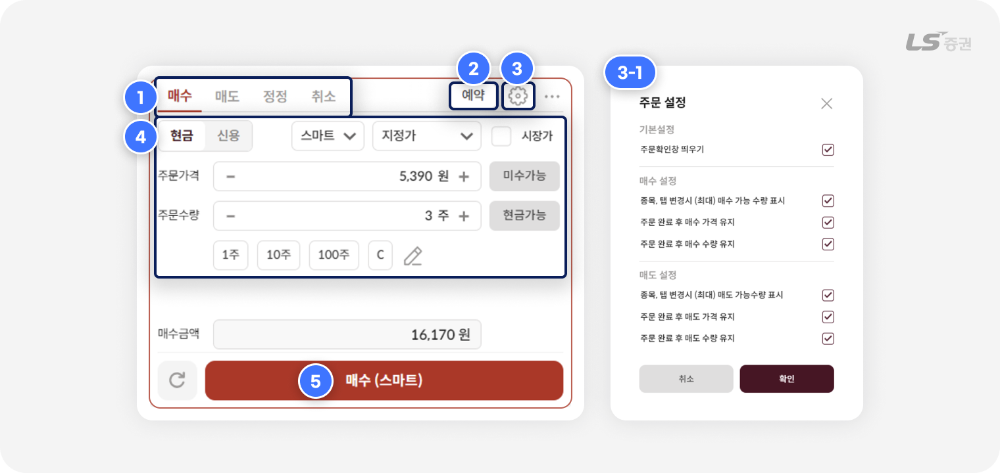
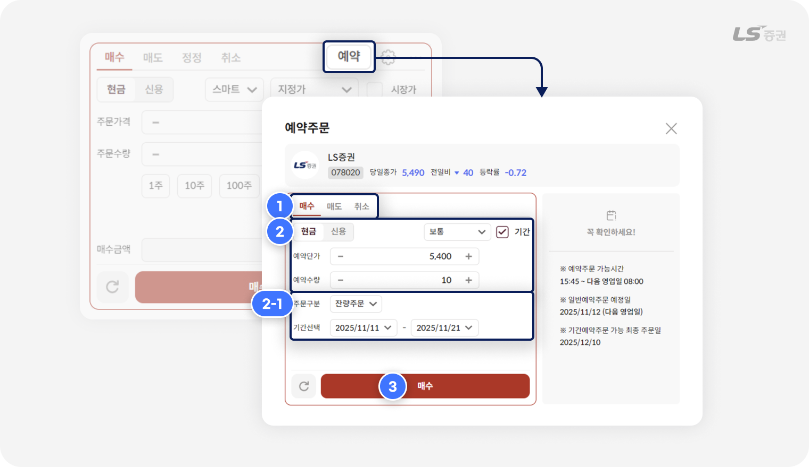
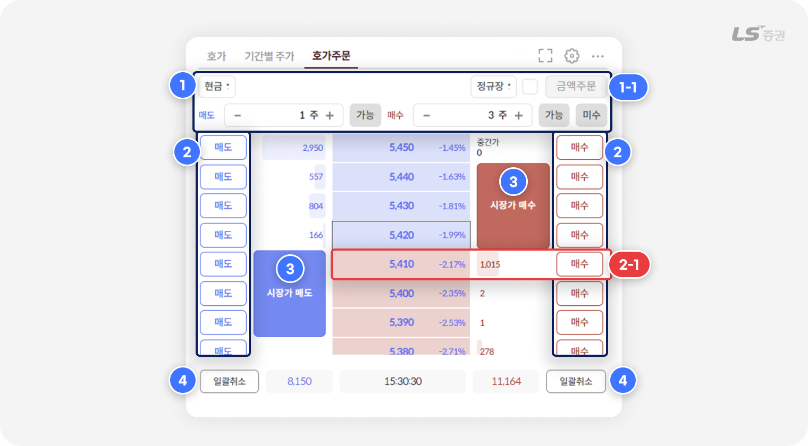
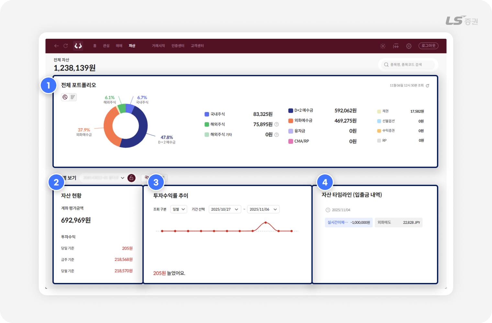

.png)
[WTS] 주요 화면 소개
기능은 다양하게,
거래와 자산 관리는 편리하게
투혼 WTS에서는 거래에 꼭 필요한 기능만을 모아, 인터넷만 연결되면 시간과 장소의 제약 없이 편리하게 이용할 수 있도록 구성했습니다.
어떤 비율의 화면이라도 최적화된 구성으로 가독성을 높여주는 반응형 웹, 투자정보 확인부터 종목 탐색과 매매를 거쳐 자산관리까지 유기적으로 이어지는 투자 사이클, 이 모든 것을 실현한 LS증권의 WTS로 접근성 높은 거래 시스템을 직접 경험해보세요.
주식거래에 없어서는 안 될
WTS에서 자주 사용하는 기능!
| 기능 | 이런 점이 좋아요 |
|---|---|
| 시세순위 | 등락률, 거래량 등 다양한 지표 기준별 상위 종목 확인 |
| 관심종목 | 다양한 기준으로 분류한 종목을 그룹 단위로 관리하고 시세 관찰 |
| 차트 | 강력하고 편리한 기술적 지표 분석 기능과 그리기 도구 제공 |
| 주식주문 | 국내 / 해외 통합 매매 환경에서 일반 주문 또는 호가 주문으로 신속 체결 |
| 자산 | 계좌 통합 포트폴리오와 계좌별 각 자산의 세부 상태 및 변동 내역 조회 |
오늘의 화제와 인기 종목을 한눈에
01 시세순위

-
1
국내외 주요 지수
- 최근 10일간의 국내지수와 주요 해외지수를 선 차트로 살펴볼 수 있습니다.
- 지수를 클릭하면 자세한 시세 정보 및 시간/일/주/월 기간별 추이를 차트와 수치로 확인할 수 있습니다.
-
2
오늘 뜨고 있는 섹터
- 오늘 주목받는 인기 섹터를 상승률에 따라 크기가 달라지는 버블 차트로 시각화하며, 원하는 섹터를 선택하면 관련 종목을 함께 조회할 수 있습니다.
- 섹터 내 관련 종목은 관심종목으로 등록하거나 매매 화면으로 빠르게 연결할 수 있습니다.
-
3
실시간 인기 종목
- LS증권 사용자가 실시간으로 많이 조회하는 종목을 확인하여, 투자 종목을 찾는 데 활용할 수 있습니다.
- 등락률, 거래량, 시가총액, 거래대금 등 다양한 기준별 상위 종목을 조회하고, 관심종목 등록이나 매매 화면으로 빠르게 연결할 수 있습니다.
참고해주세요!
- 오늘 뜨고 있는 섹터, 실시간 인기, 시가총액상위, 이달의 신규상장종목 시세는 KRX 기준만 제공됩니다.
나의 전략을 포트폴리오로 만드는
02 관심 종목

-
1
관심그룹 선택/추가
- 목적에 따라 다르게 만든 관심그룹을 선택하여 조회하고, 새 관심그룹을 빠르게 추가할 수도 있습니다.
-
2
목록 표시 및 시세 기준 변경 / 관심종목 편집
- 관심종목 목록의 표시방법을 카드형 / 목록형 중 선택할 수 있습니다.
- 시세 기준을 통합(KRX + NXT), KRX, NXT 중 선택할 수 있으며, 현재가 / 예상가 / 시간외단일가 중 선택할 수 있습니다.
- '관심편집' 선택 시 관심그룹 및 관심종목을 추가/수정/삭제 등 관리할 수 있습니다.
-
3
관심종목 목록
- 선택한 관심그룹에 해당하는 관심종목의 당일 시세 정보를 확인할 수 있습니다.
-
4
관심그룹 관련소식 모아보기
- 선택한 관심그룹에 포함된 종목들의 뉴스와 공시를 한눈에 모아볼 수 있습니다.
- 소식은 국내 뉴스, 해외 뉴스, 공시로 구분되어 있어 필요한 분류만 효율적으로 선택 및 확인할 수 있습니다.
시간대별 주식 가격, 이렇게 확인해요!
- 현재가 : 정규장 시간에는 현재 거래중인 주식 가격, 이외 시간에는 마지막 종가로 표시됩니다.
- 예상가 : 정규장 시작 전 08:40 ~ 9:00 시간 동안 동시호가에 의해 결정된 주식 가격입니다.
- 시간외 단일가 : 정규장 종료 후 16:00 ~ 18:00 시간 동안 10분 단위로 거래되는 주식 가격입니다.
주가의 흐름을 읽는, 매매 분석의 꽃
03 차트

-
1
영역 전체확대 / 화면축소
- 영역 우상단의 전체확대 / 화면축소 아이콘으로 특정 영역을 확대하거나 축소할 수 있습니다.
-
2
조회 조건 설정
- 조회 단위를 일 / 주 / 월 / 년 또는 1분 / 3분 / 5분 등 시간 단위 중 선택할 수 있습니다.
- 초기화 선택 시 모든 조건 및 차트 설정이 기본 설정으로 되돌려집니다.
-
3
차트유형/지표추가 설정
- 차트유형 : 캔들차트, 미국식바차트, 종가선차트 외 가격을 표시하는 차트를 12가지 중 선택할 수 있습니다.
- 지표추가 : 거래량, 이동평균선 외 추가하려는 다양한 지표를 차트에 추가할 수 있습니다.
-
4
드로잉 툴
- 차트 화면 위에 그릴 수 있는 다양한 그리기 분석 도구를 선택할 수 있습니다.
- 각 도구 우측의 아이콘(>)을 선택하면 팝업(4-1번)에서 그리기 패턴을 추가로 선택할 수 있습니다.
-
5
차트 스냅샷
- 카메라 아이콘 선택 시 팝업(5-1번)에서 현재 차트 상태를 이미지 형태로 저장하거나 외부에 공유할 수 있습니다.
판단은 신속하게, 실행은 정확하게
04 주식주문
일반 주문
통합 주문화면에서 국내주식과 해외주식을 모두 거래할 수 있으며, 주문 편의를 위한 추가 설정 기능을 이용할 수 있습니다.

-
1
매수 / 매도 / 정정 / 취소 주문 선택
- 접수하려는 주문의 종류를 선택합니다.
-
2
예약주문
- 원하는 요건으로 일정 시점 또는 기간에 매수/매도 주문이 자동으로 접수되도록 예약할 수 있습니다.
-
3
주문 설정
- 설정 아이콘 선택 시 팝업(3-1번)에서 주문확인창 표시, 주문가능수량 자동 입력, 주문 후 가격 / 수량 초기화 여부 등 주문 관련 세부 설정을 선택할 수 있습니다.
-
4
주문 요건 입력
- 현금/신용, 거래소, 주문유형, 가격, 수량 등 주문 요건을 입력합니다.
-
5
주문 접수
- 선택 시 주문확인창에서 최종 주문 내역을 확인하면 접수가 완료됩니다.
주식 주문 유형 정리
| 지정가 | 지정한 가격으로 주문 |
|---|---|
| 중간가 | 최우선 매수호가와 최우선 매도호가의 중간 가격 |
| 시장가 | 주문단가를 지정하지 않고 시장에서 형성되는 가격으로 자동 지정 |
| 장전 시간외 | 정규장 시작 전 시간외 거래 (08:30~08:40) |
| 장후 시간외 | 정규장 종료 후 시간외 거래 (15:40~16:00) |
| 시간외단일가 | KRX의 당일 정규장 종가를 기준으로 15:30~16:00 사이 단일가 매매 |
예약 주문
일반주문 화면 우상단 '예약' 선택 시, 원하는 요건으로 일정 시점 또는 기간에 매수/매도 주문이 자동으로 접수되는 예약주문을 설정할 수 있습니다.

-
1
예약주문 유형 선택
- 매수 / 매도 : 매수주문 또는 매도주문을 예약할 수 있습니다.
- 취소 : 아직 접수되지 않은 예약주문을 취소합니다.
-
2
주문 요건 입력
- 현금/신용, 거래소, 주문유형, 가격, 수량 등 주문 요건을 입력합니다.
- (2-1번) '기간' 체크 시, 일정기간 예약주문에 필요한 주문구분(잔량주문, 지정수량반복)을 선택하고 예약주문이 실행되는 기간을 설정할 수 있습니다.
-
3
주문 설정
- 선택 시 주문확인창에서 최종 주문 내역을 확인하면 접수가 완료됩니다.
잔량주문 vs 지정수량 반복주문
-
잔량주문은 당일 체결되지 않은 주문 수량이 모두 체결될 때까지 다음 영업일로 자동 이월하여 주문합니다.
예를 들어 예약수량이 100주일 경우, 첫날 10주가 체결되면 다음 영업일에 미체결 수량인 90주가 자동 주문됩니다. 이어서 90주 중 20주가 체결되면 그 다음 영업일에 70주가 자동 주문되며, 이러한 방법으로 예약 기간이 종료될 때까지 매일 잔여 수량이 반복 주문됩니다. -
지정수량 반복주문은 일정 기간 동안 같은 수량을 매일 반복해서 주문합니다.
예를 들어 예약수량이 100주일 경우, 예약 기간 동안 매 영업일에 100주씩 주문이 접수됩니다.
참고해주세요!
- 예약주문 가능 시간 : 15:45 ~ 다음 영업일 08:00
- 기간예약주문이 가능한 최종 주문일 : 최대 30일간 (캘린더 기준, 공휴일 포함)
- 신용매수 예약주문인 경우, 신용구분에서 '신용'(유통융자), '대주상환' 중 선택할 수 있습니다.
-
주문 시점에 조건이 충족되지 않을 경우, 주문이 접수되지 않을 수 있습니다.
실제 주문 처리 결과는 '예약주문 처리결과' 탭에서 확인해 주세요.
호가 주문
주문수량 등을 미리 설정해두고, 호가창에서 클릭만으로 신속하게 매수/매도/정정/취소 주문을 접수할 수 있습니다.

-
1
주문수량 / 주문금액 사전 설정
-
주문수량 :
매 주문마다 접수되는 매도 주문수량 / 매수 주문수량을 입력할 수 있습니다.
예를 들어 매도 1주, 매수 3주로 설정해두면 매도 주문 시 1주, 매수 주문 시 3주로 접수됩니다. -
주문금액 :
'금액주문'(1-1번) 체크 시, 매 주문마다 접수되는 총 주문금액을 입력할 수 있습니다.
주문 시 총 주문금액과 현재가를 기준으로 주문 수량이 자동 계산됩니다.
-
-
2
매수 / 매도 클릭 주문
- 원하는 호가 측면의 '매수' 또는 '매도' 버튼(2-1번)을 클릭하면 주문이 접수됩니다.
- 주문이 접수되면 주문 버튼에 해당 호가의 누적 미체결 수량이 표시됩니다.
- 미체결 수량 선택 시 다른 호가로 정정하거나, 추가주문 또는 주문을 취소할 수 있습니다.
-
3
시장가 매수 / 매도
- 사전 입력한 주문수량을 기준으로 시장가에 즉시 주문을 접수합니다.
-
4
일괄취소
- 모든 매수 주문 또는 모든 매도 주문을 한 번에 취소할 수 있습니다.
더 빠르게 주문하는 방법
- 주문 설정에서 '주문확인창 띄우기' 체크를 해제하면 호가주문에서 매수, 매도, 시장가 매수/매도, 일괄취소 버튼 클릭 시 주문확인창 없이 주문이 즉시 실행됩니다.
주의하세요!
- 주문확인창 띄우기’ 체크를 해제하면 확인 절차를 생략하기 때문에 되돌릴 수 없는 주문 실수가 발생할 수 있습니다. 이 점에 유의하여 신중히 설정해 주세요.
과거에서 현재까지, 내가 남긴 투자 발자취
05 자산

-
1
전체 자산 포트폴리오 조회
- 여러 계좌에 분산된 자산을 주식, 예수금, 파생상품 등 유형별 금액으로 합산해 한눈에 확인할 수 있습니다.
- 자산 비중을 도넛형 또는 막대형으로 시각화한 그래프로 직관적으로 이해할 수 있습니다.
-
2
계좌별 자산 현황
- 선택 계좌의 평가금액과 기간별 투자수익금을 확인할 수 있습니다.
-
3
계좌별 투자수익률 추이
- 기간을 설정하여 수익률 변화 추이를 그래프로 확인할 수 있습니다.
- 특정 지점을 선택하면 해당 시점의 수익금액과 수익률을 조회할 수 있습니다.
-
4
계좌별 자산 타임라인
- 선택 계좌의 입출금 내역을 일별로 확인할 수 있습니다.
- 입출금의 종류에 따라 파란색, 빨간색, 회색 등 색상으로 간편하게 구분할 수 있습니다.
참고해주세요!
- 전체 포트폴리오 '해외주식' 자산은 온라인 매매 가능 국가(미국, 홍콩, 일본) 보유 주식의 합계입니다.
- ‘해외주식 기타' 자산은 오프라인 매매 가능 국가(중국, 기타 국가) 보유 주식의 합계입니다.
WTS에서 빠질 수 없는 필수 메뉴와 사용 방법을 간략하게 알아보았습니다.
투혼 WTS를 통해 언제 어디서나 쉽고 편한 거래를 누릴 수 있기를 바랍니다. 감사합니다!